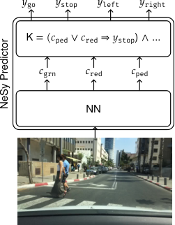
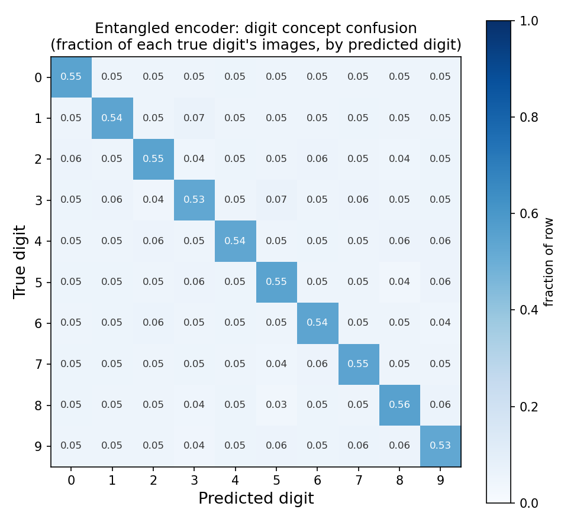
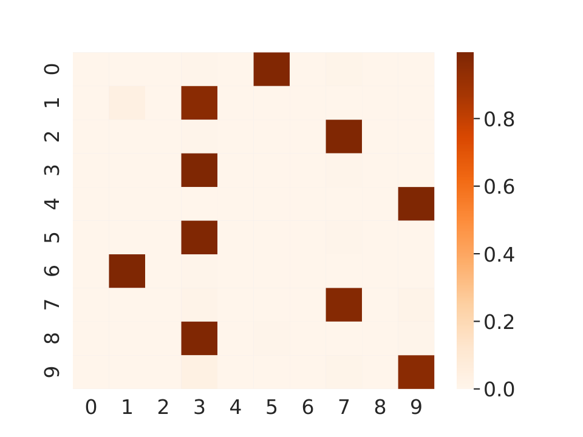

Neurosymbolic learning · education track
When correct outputs hide invalid concepts.
Worked example: Marconato, Teso, Vergari & Passerini (2023).
Not All Neuro-Symbolic Concepts Are Created Equal: Analysis and Mitigation of Reasoning Shortcuts.
NeurIPS 2023. arXiv:2305.19951
Question. Asked aloud by a person standing in view.
Response. Hans taps a foreleg; the tap count is read as the answer.
Observed. Correct on 89% of questions.
Change one thing. The questioner asks a question whose answer the questioner does not know.
Observed. Correct on 6% of questions.
Mechanism. Posture tightened as the taps approached the answer and released on the correct tap. Hans was reading the release.
Observed success does not identify the mechanism producing it.
Example and both figures from Pfungst, O. (1911), Clever Hans (The Horse of Mr. von Osten): A Contribution to Experimental Animal and Human Psychology, trans. C. L. Rahn, New York: Henry Holt. For the term's use in machine learning: Lapuschkin, Wäldchen, Binder, Montavon, Samek & Müller (2019), "Unmasking Clever Hans predictors and assessing what machines really learn," Nature Communications 10:1096.
In each domain a score is observed, the mechanism producing it stays latent, and the field has its own name for the gap between the two.
Validity is a property of an interpretation rather than of an instrument: Messick (1995), American Psychologist 50(9). Carried into ML evaluation by Jacobs & Wallach (2021), "Measurement and Fairness," FAccT.
Some concept combinations are thin or absent in the training support.
Diagnostic: a combination frequency table, computed before training.
The recorded target stands in for the construct actually wanted. Obermeyer et al. (2019) found a widely deployed health algorithm predicting cost as a proxy for need; at equal risk scores, Black patients were considerably sicker.
Accuracy against the recorded label stayed high throughout.
The target is the intended one and the label is correct, while the concepts the model reasons over carry unintended semantics.
Diagnostic: evidence about the latent concepts themselves.
Obermeyer, Powers, Vogeli & Mullainathan (2019), "Dissecting racial bias in an algorithm used to manage the health of populations," Science 366:447. Coston (2026), "Falsifying Discriminant Validity of Predictive Algorithms," arXiv:2601.17146.

Bortolotti, Marconato et al. (2024), rsbench, Fig. 2. A real dashcam frame from BDD-OIA. Reproduced under CC BY-SA 4.0.
A neurosymbolic (NeSy) model splits the task in two. A neural encoder maps raw input to concepts. A fixed, known rule maps those concepts to the label. Marconato et al. (2023) identify four properties of that pipeline that jointly govern whether a shortcut exists.
| Factor | Where it acts | What it fixes |
|---|---|---|
Prior knowledge K | the symbolic rule | how many concept assignments produce the right label |
| Data structure and support | the training set | which concept combinations are ever observed |
| Learning objective | the loss | which of those assignments are scored as optimal |
| Concept extractor architecture | the encoder | which assignments the encoder is able to represent |
Training pressure arrives at the label end only. Whatever concept values make the label come out right are, as far as the loss is concerned, correct ones.
Four factors: Marconato, Teso, Vergari & Passerini (2023), arXiv:2305.19951. Figure: Bortolotti et al. (2024), "A Neuro-Symbolic Benchmark Suite for Concept Quality and Reasoning Shortcuts," NeurIPS 2024 Datasets & Benchmarks, arXiv:2406.10368.
A reasoning shortcut (RS) is a learned concept distribution that satisfies both of the following.
It attains maximal or near maximal likelihood on the training objective.
Checked by showing task accuracy has reached its ceiling.
It diverges from ground truth concept semantics.
Checked by scoring the latent concepts against held out concept annotations.
Both conditions are required. A low concept score on its own is equally consistent with an undertrained or poorly optimised model, which is an ordinary engineering failure with an ordinary fix.
Ground truth is verified, accurate data used as a benchmark to train, validate and test a model. Here the ground truth concept annotations are the true digit identities, or the true presence of a pedestrian. They are withheld from training and used only for scoring, which is what makes condition 2 measurable.
Definition 1, Marconato et al. (2023), arXiv:2305.19951.
Y = G1 ⊕ G2 ⊕ G3
Exclusive or over three binary concepts, also called a parity check. The label is 1 when an odd number of the three concepts are on.
This is prior knowledge K: supplied by the modeller, held fixed, learned by nothing.
A parity check is an error detection method that adds one extra binary digit to a block of data, chosen so that the total sum of the bits comes out even or odd as agreed. Receiving a block whose sum breaks that agreement flags a corrupted bit.
Marconato et al. (2023) analyse it because it is the smallest knowledge base whose label optimal concept assignments are provably many. It ships as the MNLogic XOR task in rsbench.
Any rule whose output depends on a joint pattern of conditions rather than on any one of them: a checksum over transmitted bits, an odd number of risk factors present, an even number of safety interlocks open.
Three binary concepts give eight possible inputs in total.
Question to hold onto: how many assignments of meaning to G1, G2, G3
reproduce all eight labels exactly?
A dataset has exhaustive concept support when every combination of the concepts occurs in it. With three binary concepts there are 2³ = 8 combinations, and all eight are below, each paired with its true label. Nothing is held out, nothing is rare, and no further example exists to collect. This matters because the usual remedy for a model that behaves oddly is to gather more or better balanced data, and here that remedy is already fully applied before training starts.
recorded output · reasoning_shortcuts.ipynb
| g1 | g2 | g3 | label |
|---|---|---|---|
| 0 | 0 | 0 | 0 |
| 0 | 0 | 1 | 1 |
| 0 | 1 | 0 | 1 |
| 0 | 1 | 1 | 0 |
| 1 | 0 | 0 | 1 |
| 1 | 0 | 1 | 0 |
| 1 | 1 | 0 | 0 |
| 1 | 1 | 1 | 1 |
An encoder that has learned G1 and G2 inverted: whenever the true concept is 0 it reports 1, and whenever the true concept is 1 it reports 0. G3 is read correctly.
This is a complete, self consistent alternative semantics, wrong about two of the three concepts on every single row.
(1⊕g1) ⊕ (1⊕g2) ⊕ g3
= 1 ⊕ 1 ⊕ g1 ⊕ g2 ⊕ g3
= g1 ⊕ g2 ⊕ g3
The two inversions cancel. Parity is blind to flipping an even number of its inputs, so every label is reproduced exactly.
Counting the flips that survive counts how many distinct concept mappings the rule alone is unable to rule out. That count is a property of K, computable before any training run.
If the count is greater than one, the rule cannot pin the concepts down, and more data will not change that.
| g1 | g2 | g3 | label | g1 flipped | g2 flipped | g3 | label | ||
|---|---|---|---|---|---|---|---|---|---|
| 0 | 0 | 0 | 0 | → | 1 | 1 | 0 | 0 ✓ | |
| 0 | 1 | 1 | 0 | → | 1 | 0 | 1 | 0 ✓ | |
| 1 | 0 | 0 | 1 | → | 0 | 1 | 0 | 1 ✓ | |
| three rows shown; the remaining five behave identically | |||||||||
recorded output
Three pairwise flips survive, each wrong about two concepts on every row. Flipping all three fails, because an odd number of inversions changes the parity. Counting the intended assignment, four label optimal solutions coexist, and the training objective scores all four identically.
Enumerating by hand works at three concepts. At realistic sizes, rsbench's count-rss does the same job by encoding the shortcut condition as a propositional formula and calling a model counter.
count-rss: Bortolotti et al. (2024), arXiv:2406.10368. Exact and approximate #SAT counting over the set of label optimal concept mappings.
Two handwritten digit images go in. The encoder predicts a digit for each. A fixed rule adds the two predictions. Only the sum carries a label, so the individual digits are never supervised, exactly as G1, G2, G3 were never supervised in the parity example.
A dataset card states what a dataset is and what it can be asked, so that a result is read against the design that produced it rather than against a general impression. Each claim later in this section rests on a specific line here.
Source. MNIST (LeCun et al., 1998) via torchvision.datasets. Preprocessing is scaling to tensors, and that alone.
Construction. All 100 ordered digit pairs, 20 replicas each, for 2000 examples. Concept support is exhaustive and balanced by design, matching the parity example one level up in complexity.
Answers. Whether a shortcut is caused by the architecture or by the rule, because data support is held fixed and fully known across every run.
Leaves open. Anything about selection bias or missing combinations, which requires restricted support. The driving section uses a separate generator for that.
This is the fourth factor, the concept extractor architecture. Task, data and rule are held identical across both conditions, so any difference in concept quality is attributable to this choice alone.
The entangled trunk can pick a pair of numbers that sums correctly while either number alone is wrong.
The disentangled encoder has to commit to a digit it can defend from one image.
Which encoder do you expect to learn
better digit concepts, and why?
Commit to an answer. The next slide is the measurement.
training · 3 seeds
recorded output · entangled
How can the answer be about 98% correct
if the concepts are only about 54% aligned?
The fraction of examples whose final label the model got right: the predicted sum equals the true sum.
Supervised during training. This is the number a standard evaluation reports.
The agreement between predicted and true digit identities, computed per digit class and then averaged, so a rare class counts as much as a common one.
Scored against ground truth annotations the model was never trained on. Available here only because the data is synthetic and the true digits are known.

How to read it. One row per true digit. Each row sums to 1 and shows how that digit's images were distributed across the encoder's answers.
1. The diagonal. About 0.54 everywhere. Each true digit is recovered a little over half the time.
2. The off diagonal. About 0.05 in every cell. The remaining 0.46 is split nine ways, which is close to uniform.
3. The shape. Uniform spread means the errors are structureless: a true 3 is called each of the nine other digits about equally often. A model that confused 3 with 8 would put a hot cell there instead. This encoder is choosing whatever value makes the pair land on the right sum.
Two other shapes worth recognising: a bright diagonal, meaning grounded concepts; and a bright vertical column, meaning many true concepts collapsed onto one predicted concept.

Bortolotti, Marconato et al. (2024), rsbench, Table 3 left: DeepProbLog concept confusion on MNAdd-EvenOdd. Reproduced under CC BY-SA 4.0.
Axes. True digit down the rows, predicted digit across the columns. The task is MNIST addition where training pairs are both even or both odd, which is how rsbench makes sure a shortcut exists.
Every row is dark, and none is on the diagonal. The model is confident, and wrong every time.
Five columns take all ten rows. 1, 3, 5 and 8 go to 3; 2 and 7 go to 7; 4 and 9 go to 9; 0 goes to 5; 6 goes to 1. All five are odd digits.
rsbench calls this concept collapse, Cls(C) = 1 − p/m, with m the concept count and p the columns holding any mass.
Interpretation. The encoder learned five buckets that fit the addition rule instead of ten digit identities.
Impact. It scores label F1 = 0.94 ± 0.04, so the outcome metric gives no reason to open this matrix.
Marconato et al. (2023) report the same collapse on BDD-OIA, the real dashcam benchmark.
| Encoder | Task accuracy | Concept F1 | Reading |
|---|---|---|---|
| Disentangled | 0.997 to 0.999 | 0.998 | concepts grounded |
| Entangled | 0.97 to 0.98 | 0.54 | shortcut |
Three seeds per architecture, from this notebook. Shortcuts are alternative optima, so different seeds can land on different solutions.
Is the entangled model simply undertrained? That is the competing explanation, and it has to be ruled out rather than assumed away.
More epochs and more seeds leave entangled task accuracy at about 98%, which is where it settles. Condition 1 of the definition therefore holds, and the 0.54 concept F1 is a shortcut rather than an optimisation failure.
The direction reproduces the disentanglement finding in Table 2 of Marconato et al. (2023), whose caption reads: "Q1: Disentanglement (dis) can be very powerful to lower the frequency of RSs on XOR and MNIST-Addition data sets (the lower the better). Results are averaged over 30 optimal runs." That table reports shortcut frequency over 30 runs; the accuracy and F1 figures above are this notebook's own three seed measurements, not the paper's numbers.
Take one training example: two images, whose true digits are 3 and 6. Under addition alone the model is told the answer is 9. Many digit pairs satisfy that.
d1 + d2 = 9
0+9 1+8 2+7 3+6 4+5
Ten ordered pairs fit the observation. The loss has nothing to say about which one the encoder should pick, so an encoder that reads 3 as 4 and 6 as 5 is scored exactly as well.
d1 + d2 = 9
d1 × d2 = 18
3+6
The two digits are the roots of x² − 9x + 18 = 0. A sum and a product determine an unordered pair uniquely, so exactly one assignment survives.
Adding a relationship over the same concepts removes alternatives that satisfied the first relationship. This is the learning objective factor.
MNIST-AddMul under restricted data support: the same digit images, supervised first by their sum alone, then by sum and product jointly.
Cited rather than reproduced. Local attempts at addition alone never reached ceiling task accuracy, so a local number would have failed condition 1 and shown an optimisation failure instead of a shortcut.
Marconato et al. (2023), MNIST-AddMul, restricted data support.
Tags show what the encoder calls each object, and the pink tag is the shortcut: pedestrians read as red lights. The two task construction follows the argument in Marconato et al. (2023), Fig. 1.
Under K1 = (pedestrian ∨ red ⇒ stop) the shortcut is invisible, because both concepts imply the same action. It becomes visible when the concepts are reused under K2, where an emergency vehicle may ignore a red light but never a pedestrian.
The next slides rebuild this on synthetic data, where the confound is imposed by hand and therefore known exactly rather than inferred.
This scenario recurs across the literature: introduced as Fig. 1 of Marconato et al. (2023), arXiv:2305.19951; instantiated on real dashcam data as BDD-OIA (Xu et al., 2020, CVPR); evaluated by BEARS (Marconato et al., 2024, UAI, arXiv:2402.12240); shipped as a task in rsbench (Bortolotti et al., 2024, NeurIPS Datasets & Benchmarks, arXiv:2406.10368); and used again by Andolfi & Giunchiglia (2025), arXiv:2510.25497.
Two concepts, one OR rule, and only the STOP decision is labelled. In every training scene a red light appears with a pedestrian and a pedestrian with a red light, so the two concepts are perfectly correlated.
recorded output · no concept supervision
The two sensors carry different amounts of noise: the pedestrian channel is generated at noise 0.3 and the light channel at 1.2, so the light channel carries four times the noise. Because the concepts always agree in training, reading the pedestrian sensor alone already produces the right STOP decision on every scene. Once the loss is near zero, the OR gate passes almost no error signal back to the light encoder, whose weights stay close to their initial random values. That is why light_f1 is exactly 0.000 while task accuracy sits at 0.988, the ceiling the pedestrian noise permits.
Gradient descent is the iterative optimisation algorithm that trains the encoders: it finds a minimum of the loss by repeatedly stepping in the direction opposite to the gradient. Each step is shared out across the parameters in proportion to how much each one affects the loss, which is exactly the quantity the OR gate drives to near zero for the light encoder.
Each cell is one combination of the two concepts. The label under pedestrian ∨ red ⇒ stop is written inside.
| red light | green light | |
|---|---|---|
| pedestrian | STOP seen often | STOP never seen |
| none | STOP never seen | GO seen often |
| red light | green light | |
|---|---|---|
| pedestrian | STOP | STOP predicted STOP ✓ |
| none | STOP predicted GO ✗ | GO |
The test set holds the two combinations the confound excluded, so the concepts are forced to disagree. An encoder reading the pedestrian sensor alone handles the top right cell correctly and misses the bottom left one, which puts task accuracy at about one half.
recorded output · decorrelated test set
Supervising the concepts directly adds a loss term that bypasses the OR gate, which is how the starved encoder starts receiving gradient. Sweeping the weight on that term:
| supervision weight | light F1 | OOD task acc. | in-dist. task acc. |
|---|---|---|---|
| 0.0 | 0.000 | 0.535 | 0.988 |
| 0.2 | 0.373 | 0.680 | 0.988 |
| 0.5 | 0.600 | 0.770 | 0.952 |
| 1.0 | 0.674 | 0.855 | 0.920 |
OOD accuracy rises 0.535 to 0.855. In-distribution accuracy falls 0.988 to 0.920.
Light F1 moves 0.000 to 0.674, so the starved encoder does start learning the concept once it is supervised directly.
Between weights 0.0 and 0.2 the gain is free: OOD accuracy rises 0.145 while in-distribution accuracy stays at 0.988. The cost only appears past 0.2, where the concept loss begins competing with the task loss for the same capacity.
Buying 0.320 of OOD accuracy costs 0.068 of in-distribution accuracy. Whether that is worth it depends on how often deployment breaks the training confound, which is a fact about the world rather than about the model.
A team reporting task accuracy alone sees only the 0.068 drop and reads concept supervision as a regression. The concept column is what makes the exchange visible.
Real dashcam frames annotated with 21 binary concepts for obstacles on the road. The task is multi-label: which of forward, stop, left, right are safe.
Prior knowledge includes that moving forward is unsafe when pedestrians are present.
rsbench reports that models on this task commonly confuse pedestrians with red lights, because both imply the correct stop action on every training example.
This is the confound of the previous slides, arising on its own in real data rather than being imposed.
rsbench ships BDD-OIA together with a rendered synthetic counterpart, SDD-OIA, so data support can be varied deliberately while the visual domain is held similar.
It also ships the concept quality metrics and count-rss.
The paradigm generalises past driving. Concept bottleneck models, DeepProbLog and Logic Tensor Networks all share the structure that creates the problem: a supervised label, a fixed rule, and latent concepts in between.
Bortolotti, Marconato, Carraro, Morettin et al. (2024), "A Neuro-Symbolic Benchmark Suite for Concept Quality and Reasoning Shortcuts," NeurIPS 2024 Datasets & Benchmarks Track, arXiv:2406.10368. BDD-OIA: Xu et al. (2020), CVPR.
Does the system produce the right observable result?
Measured by task accuracy. Cheap, standard, and the number usually reported.
Does it produce that result for the intended reason?
Measured by evidence about the latent concepts. It requires its own evidence, separate from the first column.
A high task score is evidence for the first claim only.
Messick (1995); Jacobs & Wallach (2021), "Measurement and Fairness," FAccT.
Task accuracy shown to be at its ceiling, which separates a shortcut from an optimisation failure.
Concept F1 reported per concept rather than averaged.
Accuracy under a shift that breaks a known confound.
A combination frequency table for the training data.
Ablating the architecture and the rule with data held fixed.
A count of label optimal concept mappings admitted by the rule.
High task accuracy on its own.
Constraint satisfaction, when the rule is applied directly to the network's own beliefs. It then holds by construction, making it a plumbing check rather than a validation.
Averaged concept F1. The driving example had one concept at 0.99 and one at 0.00, averaging to a respectable number.
A low concept F1 on its own, with the ceiling check skipped.
| Factor | Where | Mechanism | Diagnostic | Result |
|---|---|---|---|---|
| Prior knowledge | 3-way XOR | Parity is invariant to inverting an even number of inputs, so three pairwise flips reproduce all eight labels. | Enumerate the label optimal mappings of the rule. | 4 optima |
| Architecture | MNIST-Addition | A shared trunk conditions each digit prediction on both images, so a wrong pair can still sum correctly. | Swap encoder, hold data and rule fixed; check the ceiling; read the confusion matrix. | F1 0.54 vs 0.998 |
| Objective | Add + Multiply | A sum admits many digit pairs; a sum together with a product determines the pair. | Add a second relationship over the same concepts and re-measure. | F1 0% to 99.8% |
| Data support | Driving | Two perfectly correlated concepts under an OR gate; the lower noise sensor absorbs the gradient and the other stays at initialisation. | Per concept F1 plus a decorrelated shift test. | OOD 0.988 to 0.535 |
Across these four rows, task accuracy stayed at or near its ceiling in every case while concept quality ranged from 0.998 down to 0.000. Task accuracy flagged none of them, and each row needed a different measurement to surface.
Each takes a different position on what to do once you accept that the label alone underdetermines the concepts.
| Work | Position | What it gives you |
|---|---|---|
| Marconato et al. (2023) | Shortcuts are unintended optima of the objective, governed by four factors. | The diagnostic vocabulary used throughout this deck. |
| BEARS · Marconato et al. (2024) | Calibrate rather than eliminate. Ensemble so the model stays uncertain about concepts a shortcut has touched. | Concept level confidence a downstream user can distrust selectively. |
| van Krieken et al. (2025) | The independence assumption fails. To speed up inference, most NeSy predictors score each concept bit separately, so their belief about a whole combination is only the product of the separate bits. | A proof that a product of independent bits cannot put mass on two particular combinations and zero elsewhere. The model therefore has no way to say "either 3 and 6 or 4 and 5, and nothing between," and cannot be shortcut aware for most problems. Calibration has an architectural precondition. |
| Yang et al. (2024) | Shortcut risk is the gap between true risk and surrogate risk. | A bound in knowledge base complexity, sample size and hypothesis space, and a result that abductive learning lowers it via the distance function. |
| Takemura et al. (2026) | Constraint satisfaction: when is the concept mapping uniquely determined? | An ASP verification algorithm and a greedy repair method. Deciding shortcut freeness is coNP-complete. |
| Coston (2026) | Falsification: test discriminant validity against a named impermissible proxy. | A nonparametric hypothesis test that can fail, usable outside neurosymbolic settings. |
A caution from Takemura et al.: a discrimination property on the constraints rules out shortcuts that swap two concepts and leaves longer permutation cycles standing. Their Fig. 2 gives a task whose constraint graph is fully connected and which still admits two shortcuts through a three cycle. Connectivity is insufficient, and so is any single structural check.
| Approach | Strength | Weakness |
|---|---|---|
| End to end neural | strong perception, flexible representations | weak explicit semantics |
| Pure symbolic | transparent rules, auditable | grounding and perception are hard |
| Neurosymbolic | learned perception together with explicit reasoning | whether the learned symbols are grounded as intended |
Neurosymbolic modelling itself is well established, with DeepProbLog and Logic Tensor Networks in use for several years. The open technical problem follows from the architecture's central promise: concepts are made explicit so that they can be reused, verified and explained, which is precisely why their semantics have to be checked rather than assumed.
Reasoning shortcuts were formalised in 2023. The benchmark suite arrived in 2024, and the complexity results in 2026. The measurement practice is still being built.
The default response to a model that is working poorly is to train a larger one.
| Intervention | Cost profile |
|---|---|
| Change the encoder architecture | same budget; the MNIST section fixed the shortcut without adding capacity |
| Add a second relationship | same data, one additional supervision signal |
| Label a subset of concepts | annotation cost rather than compute |
| Analyse data support | read from the data, before training |
| Count the rule's optima | a model counter, before any training run |
More validation does not have to mean more compute. Diagnosing which factor is operating tells you which intervention is even relevant.
A model can learn the right rule
over concepts with unintended semantics.
What evidence would convince you
that a learned concept means
what you think it means?
Every diagnostic in this deck is runnable, end to end.reasoning_shortcuts.ipynb